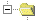

a cloud is used to
depict a Child fact: these are facts that have not (yet) been used to
define other facts.
a cloud is used to
depict a Child fact: these are facts that have not (yet) been used to
define other facts. Note that the fact hierarchy is based on single inheritence, i.e. each child has just one parent, although each parent can have multiple children. As parents are themselves children they will have inherited attributes from their own parents.
The hierarchy of Parents and Children is represented as a tree using the following icons:
the closed folder represents a Parent whose children are not currently shown on screen. This saves space, and is the default state for all parent facts. To show the children - click on the "+" icon, or double-click on the fact's name.
 the open folder depicts a Parent whose Children are shown underneath. To hide the children click on the "-" icon, or double-click on the fact's name.
a cloud is used to
depict a Child fact: these are facts that have not (yet) been used to
define other facts.
Clicking on a Parent or a Child fact will cause its attributes to be displayed in the Attribute Table panel below.